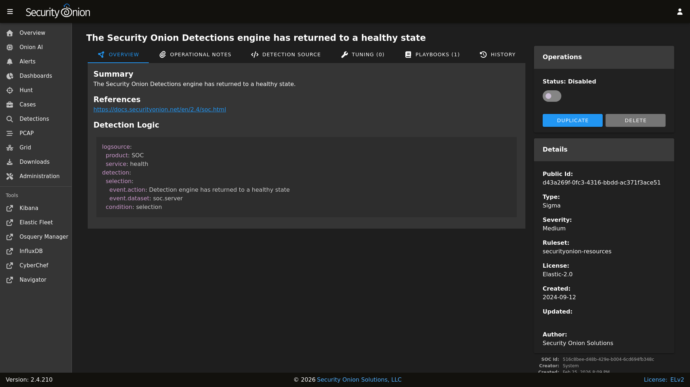
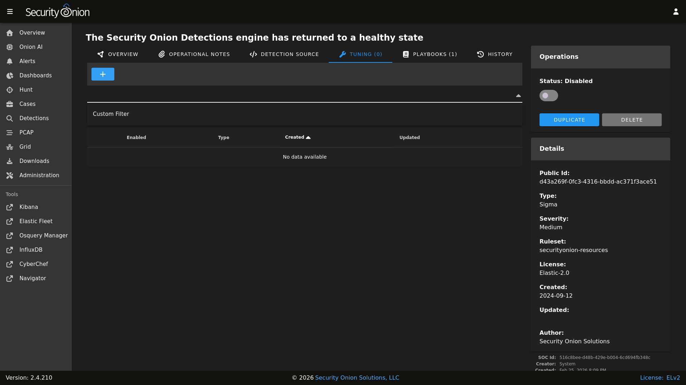

Sigma
Sigma rules are loaded into ElastAlert 2 to monitor incoming logs for suspicious or noteworthy activity. Active sigma rules generate alerts that can then be found in Alerts.
From https://github.com/SigmaHQ/sigma:
Sigma is a generic and open signature format that allows you to describe relevant log events in a straightforward manner. The rule format is very flexible, easy to write and applicable to any type of log file. The main purpose of this project is to provide a structured form in which researchers or analysts can describe their once developed detection methods and make them shareable with others. Sigma is for log files what Snort is for network traffic and YARA is for files.
Managing Existing Sigma Rules
You can manage existing Sigma rules via Detections. There are two ways to do so:
From the main Detections interface, you can search for the desired detection and click the binoculars icon.
From the Alerts interface, you can click an alert and then click the
Tune Detectionmenu item.
Once you’ve used one of these methods to reach the detection detail page, you can check the Status field in the upper-right corner and use the slider to enable or disable the detection.
{kind=link}

To tune the detection:
click the TUNING tab
click the blue + button
select the type of tuning (Custom Filter)
enter your custom filter in the Custom Filter field
click the
CREATEbutton to create and enable the Override
{kind=link}

Custom Filters are Sigma Search Identifiers and will be applied like so: "($ORIGINAL_CONDITION) and not 1 of sofilter*"
For example, suppose that you have an Intrusion Detection Honeypot node installed with the HTTP webserver enabled. Your nightly vulnerablity scan is connecting to it and generating an alert from the Security Onion IDH - HTTP Access detection. To filter out connection attempts from this scanner, you would add the following Custom Filter to this detection:
sofilter:
src_ip|cidr: 192.168.55.45/32
Once you save this filter, it is enabled by default for this detection. Clicking on the Detection Source tab and then on Convert will show you what the new EQL query looks like, which should include a filter for the IP address.
For more information on Sigma rule syntax, please see the Sigma documentation at https://sigmahq.io/docs/basics/rules.html#detection.
Adding New Sigma Rules
To add a new Sigma rule, go to the main Detections page and click the blue + button between Options and the query bar. A form will appear where you will:
click the Language drop-down and select
Sigmaoptionally specify a license
add the signature
click the
CREATEbutton and the detection should deploy to your grid at the next 15-minute cycle

Sigma Configuration
Navigate to Administration –> Configuration.
At the top of the page, click the
Optionsmenu and then enable theShow advanced settingsoption.Navigate to soc –> config –> server –> modules –> elastalertengine.
Once you’ve reached this location, here are some common settings.
Sigma Update Frequency
By default, Security Onion checks for new Sigma rules every 24 hours. You can change this value at elastalertengine –> communityRulesImportFrequencySeconds.
Sigma Packages
You can choose from different Sigma packages:
https://github.com/SigmaHQ/sigma/blob/master/Releases.md
You can modify this setting via elastalertengine –> sigmaRulePackages.
Custom Sigma Repositories
You can configure Security Onion to pull Sigma rules from custom git repos via elastalertengine –> rulesRepos –> default.
Repos can be accessed via https or from the local filesystem. For example:
file:///nsm/rules/detect-sigma/repos/my-custom-rep
Enable Sigma Rules on Import
soc > config > server > modules > elastalertengine > enabledSigmaRules > default
This configuration options allows you to specify which rules are automatically enabled upon initial import. The format for this filter is a YAML list that supports flexible filtering criteria based on a number of fields in a Sigma rule. A rule is enabled only if it matches all specified filters - if there is more than one filter for a field, then it has to match at least one.
Configuration Format
Each item in the YAML list represents a set of filters, using the following fields:
- ruleset
Type: List of strings
Description: Specifies the ruleset(s) to filter by (e.g., “core”, “securityonion-resources”, “*” for any ruleset).
- level
Type: List of strings
Description: Specifies the severity level(s) (e.g., “critical”, “high”, “*” for any level. This is not a greater than or equal check - just a string match).
- product
Type: List of strings
Description: Specifies the product(s) to filter by (e.g., “windows”, “*” for any products).
- category
Type: List of strings
Description: Specifies the event category or categories (e.g., “process_creation”, “registry_event”, “*” for any category).
- service
Type: List of strings
Description: Specifies the service(s) to filter by (e.g., “security”, “dns-client”, “*” for any service).
For example:
# Enable all critical and high rules from the "securityonion-resources" ruleset
- ruleset: ["securityonion-resources"]
level: ["critical", "high"]
product: ["*"]
category: ["*"]
service: ["*"]